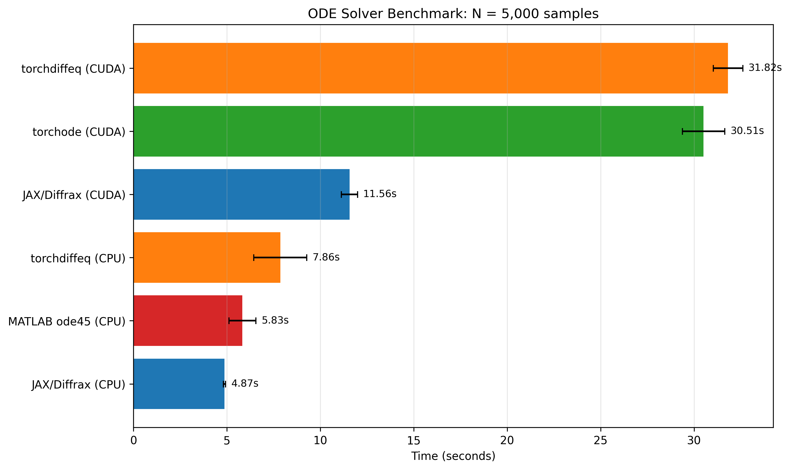
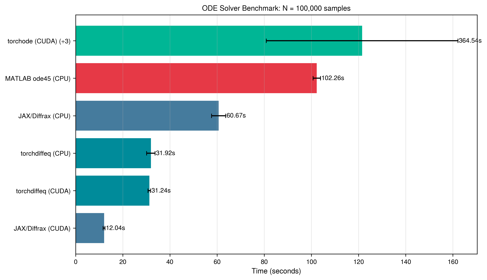

Solver Comparison
This benchmark compares ODE solver performance across different Python backends and MATLAB.
Test Configuration
- ODE: Driven damped pendulum
- t_span: (0, 1000)
- Tolerances: rtol=1e-8, atol=1e-6
- Sample sizes: 5,000 / 10,000 / 100,000 initial conditions
Solvers Tested
| Solver | Backend | Devices | Method |
|---|---|---|---|
| MATLAB ode45 | MATLAB | CPU | Dormand-Prince 5(4) |
| JAX/Diffrax | JAX | CPU, CUDA | Dormand-Prince 5(4) |
| torchdiffeq | PyTorch | CPU, CUDA | Dormand-Prince 5(4) |
| torchode | PyTorch | CUDA | Dormand-Prince 5(4) |
TorchOde Performance Issues
TorchOde was excluded from CPU benchmarks due to severe performance issues observed in previous runs. Additionally, it performs very poorly at larger N values (e.g., ~1133s at N=100k vs ~11s for JAX/Diffrax), indicating it is not properly optimized for GPU batch processing in this use case.
Results by Sample Size
N = 5,000
| Solver | Device | Time (s) | Std Dev | vs MATLAB |
|---|---|---|---|---|
| JAX/Diffrax | CPU | 4.80 | ±0.33 | 1.21x |
| MATLAB ode45 | CPU | 5.83 | ±0.72 | 1.00x |
| torchdiffeq | CPU | 7.36 | ±0.35 | 0.79x |
| JAX/Diffrax | CUDA | 12.30 | ±0.30 | 0.47x |
| torchode | CUDA | 29.13 | ±0.27 | 0.20x |
| torchdiffeq | CUDA | 36.90 | ±0.14 | 0.16x |
N = 10,000
| Solver | Device | Time (s) | Std Dev | vs MATLAB |
|---|---|---|---|---|
| torchdiffeq | CPU | 9.22 | ±0.19 | 1.26x |
| JAX/Diffrax | CPU | 9.59 | ±0.25 | 1.21x |
| MATLAB ode45 | CPU | 11.64 | ±0.40 | 1.00x |
| JAX/Diffrax | CUDA | 12.44 | ±0.36 | 0.94x |
| torchode | CUDA | 30.14 | ±0.31 | 0.39x |
| torchdiffeq | CUDA | 35.94 | ±1.24 | 0.32x |
N = 100,000
| Solver | Device | Time (s) | Std Dev | vs MATLAB |
|---|---|---|---|---|
| JAX/Diffrax | CUDA | 12.04 | ±0.38 | 8.49x |
| torchdiffeq | CUDA | 31.24 | ±0.54 | 3.27x |
| torchdiffeq | CPU | 31.92 | ±1.80 | 3.20x |
| JAX/Diffrax | CPU | 60.67 | ±3.01 | 1.69x |
| MATLAB ode45 | CPU | 102.26 | ±1.59 | 1.00x |
| torchode | CUDA | 364.54 | ±122.05 | 0.28x |
Comparison Plots
N = 5,000

N = 10,000

N = 100,000

Note: torchode (CUDA) time is divided by 3 in the N=100,000 plot to improve readability. Note: the first round of torchode tooks 2x longer than any following run inflating the average. The real average duration is around 310 seconds
Key Findings
- JAX/Diffrax (CPU) is the fastest option for small to medium N (5k-10k samples)
- JAX/Diffrax (CUDA) achieves near-constant time (~11.5s) regardless of N, making it 8.9x faster than MATLAB at N=100k
- torchdiffeq scales reasonably well on both CPU and CUDA
- GPU acceleration only provides significant benefit at large sample sizes (N ≥ 100k)
- At small N, GPU overhead makes CPU solvers faster
Recommendations
JAX/Diffrax should be the default solver for pyBasin. When a GPU is available, it delivers unmatched performance with near-constant integration time regardless of sample size—making it the clear choice for any workload.
Additionally, JAX/Diffrax is the only solver that supports event-based termination with individual trajectory stopping. This is critical for systems with unbounded trajectories (e.g., Lorenz "broken butterfly"), where some initial conditions diverge to infinity. With JAX events, each trajectory stops independently when it exceeds a threshold, while bounded trajectories continue integrating. Other solvers either stop all trajectories simultaneously or require workarounds like zero masking. See the Handling Unbounded Trajectories guide for details.
For CPU-only systems, the choice depends on scale. At smaller sample sizes (N ≤ 10k), JAX/Diffrax on CPU is the fastest option. However, at larger scales (N = 100k), torchdiffeq on CPU offers a meaningful ~2x improvement over JAX/Diffrax CPU (32s vs 64s) . While this difference is negligible for single runs, it becomes significant for parameter studies that require evaluating many ODE configurations. A study testing 50 parameter combinations at N=100k would save roughly 26 minutes by using torchdiffeq instead of JAX/Diffrax on CPU—though JAX/Diffrax on GPU would complete the same workload in just 10 minutes.
Hardware
Benchmarks run on:
- CPU: Intel Core Ultra 9 275HX
- GPU: NVIDIA GeForce RTX 5070 Ti Laptop GPU (12 GB VRAM)